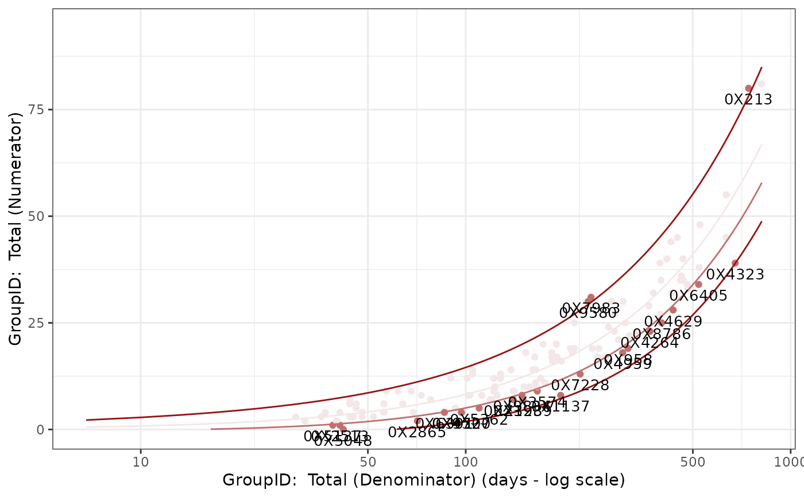
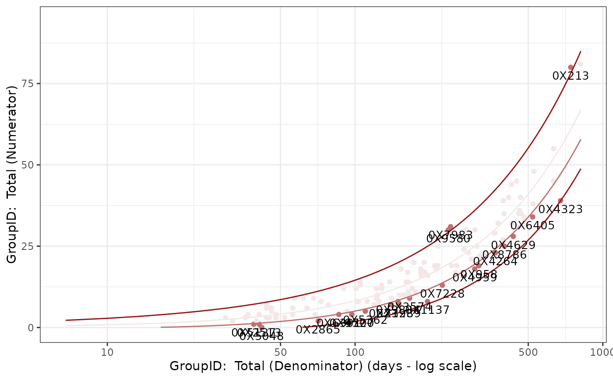

`r lifecycle::badge("stable")`
Usage
Visualize_Scatter(
dfResults,
dfBounds = NULL,
strGroupCol = NULL,
strGroupLabel = NULL,
strUnit = "days",
vColors = c("#999999", "#FADB14", "#FF4D4F")
)Arguments
- dfResults
`data.frame` A stacked summary of analysis pipeline output. Created by passing a list of results returned by [Summarize()] to [BindResults()]. Expected columns: `GroupID`, `GroupLevel`, `Numerator`, `Denominator`, `Metric`, `Score`, `Flag`, `MetricID`, `StudyID`, `SnapshotDate`.
- dfBounds
`data.frame` Set of predicted percentages/rates and upper- and lower-bounds across the full range of sample sizes/total exposure values for reporting. Created by passing `dfResults` and `dfMetrics` to [MakeBounds()]. Expected columns: `Threshold`, `Denominator`, `Numerator`, `Metric`, `MetricID`, `StudyID`, `SnapshotDate`.
- strGroupCol
`character` name of stratification column for facet wrap Default: `NULL`
- strGroupLabel
`character` name of group, used for labeling axes. Default: `NULL`
- strUnit
`character` exposure time unit. Default: `days`
- vColors
`character` vector of hex colors for plotting boundaries/thresholds. Index 1: mean; index 2: first threshold boundary; index 3: second threshold boundary.
Examples
## Filter sample data to only one metric
reportingResults_filter <- gsm.core::reportingResults %>%
dplyr::filter(MetricID == "Analysis_kri0001")
reportingBounds_filter <- gsm.core::reportingBounds %>%
dplyr::filter(MetricID == "Analysis_kri0001")
## Output- filtered to one snapshot date
Visualize_Scatter(
dfResults = reportingResults_filter %>%
dplyr::filter(SnapshotDate == max(SnapshotDate)),
dfBounds = reportingBounds_filter %>%
dplyr::filter(SnapshotDate == max(SnapshotDate))
)
#> Warning: Removed 252 rows containing missing values or values outside the scale range
#> (`geom_line()`).
 ## Create Faceted output on snapshot date
Visualize_Scatter(
dfResults = reportingResults_filter,
dfBounds = reportingBounds_filter,
strGroupCol = "SnapshotDate",
strGroupLabel = "Snapshot Date"
)
#> Warning: Removed 758 rows containing missing values or values outside the scale range
#> (`geom_line()`).
## Create Faceted output on snapshot date
Visualize_Scatter(
dfResults = reportingResults_filter,
dfBounds = reportingBounds_filter,
strGroupCol = "SnapshotDate",
strGroupLabel = "Snapshot Date"
)
#> Warning: Removed 758 rows containing missing values or values outside the scale range
#> (`geom_line()`).
 ## Custom Colors
Visualize_Scatter(
dfResults = reportingResults_filter %>%
dplyr::filter(SnapshotDate == max(SnapshotDate)),
dfBounds = reportingBounds_filter %>%
dplyr::filter(SnapshotDate == max(SnapshotDate)),
vColors = c("#F4E7E7", "#C17070", "#981212")
)
#> Warning: Removed 252 rows containing missing values or values outside the scale range
#> (`geom_line()`).

## Custom Colors
Visualize_Scatter(
dfResults = reportingResults_filter %>%
dplyr::filter(SnapshotDate == max(SnapshotDate)),
dfBounds = reportingBounds_filter %>%
dplyr::filter(SnapshotDate == max(SnapshotDate)),
vColors = c("#F4E7E7", "#C17070", "#981212")
)
#> Warning: Removed 252 rows containing missing values or values outside the scale range
#> (`geom_line()`).
